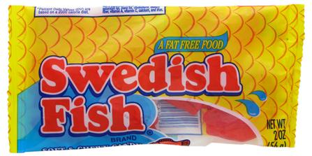

What are Swedish Fish?

Swedish Fish is a fish-shaped, chewy candy originally developed by Swedish candy producer Malaco in the late 1950s for the U.S. market. The wrapper calls them "a fat free food" and they are marketed in different colors and flavors.
History
Swedish Fish is a fish-shaped, chewy candy originally developed by Swedish candy producer Malaco in the late 1950s for the U.S. market. The wrapper calls them "a fat free food" and they are marketed in different colors and flavors.